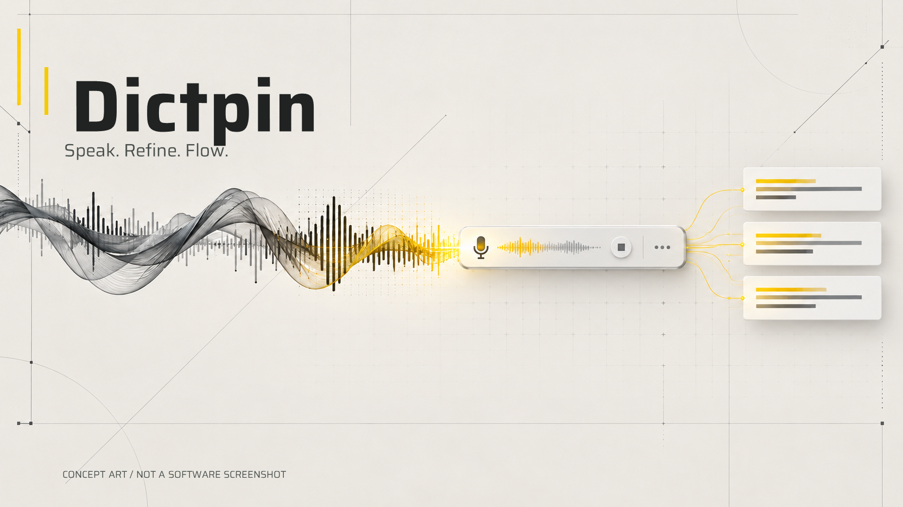
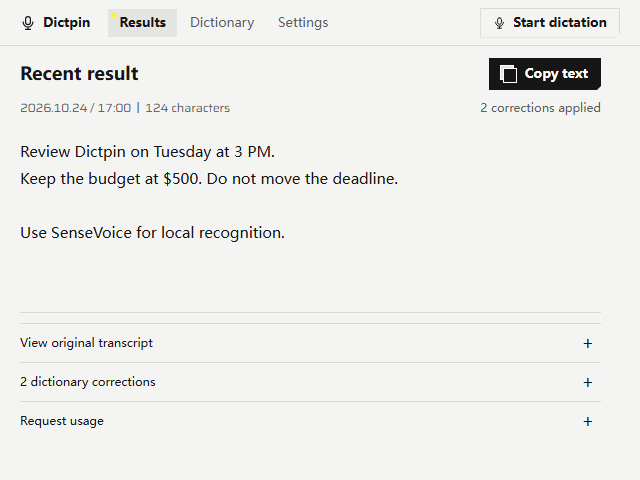
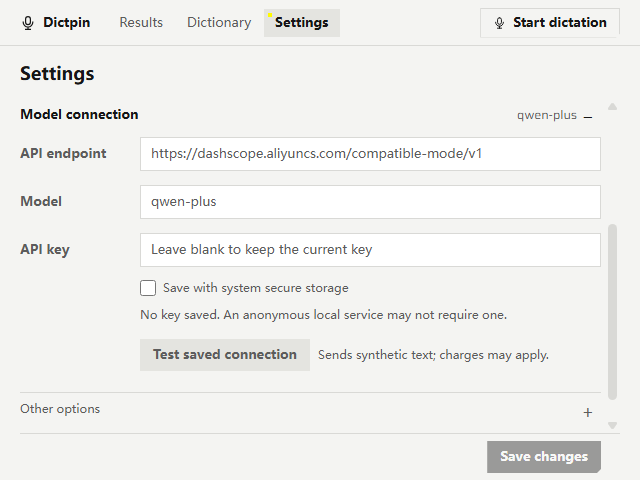

Dictpin
Compact desktop dictation. Speak. Refine. Flow.
Documentation preview only. This page does not start the application, microphone, local recognizer, or text service. Read README.md for setup and current limitations.
AI-generated concept artwork

Concept artwork, not a software screenshot or proof of implemented features. The small voice strip, sound wave and abstract text cards are a visual metaphor.
Actual application screenshots
Real Electron rendering with fictional content and simulated system adapters. These images do not certify a physical microphone, system clipboard, global shortcut, or live paid service. These captures use the optional English presentation mode. The default UI remains Simplified Chinese.

